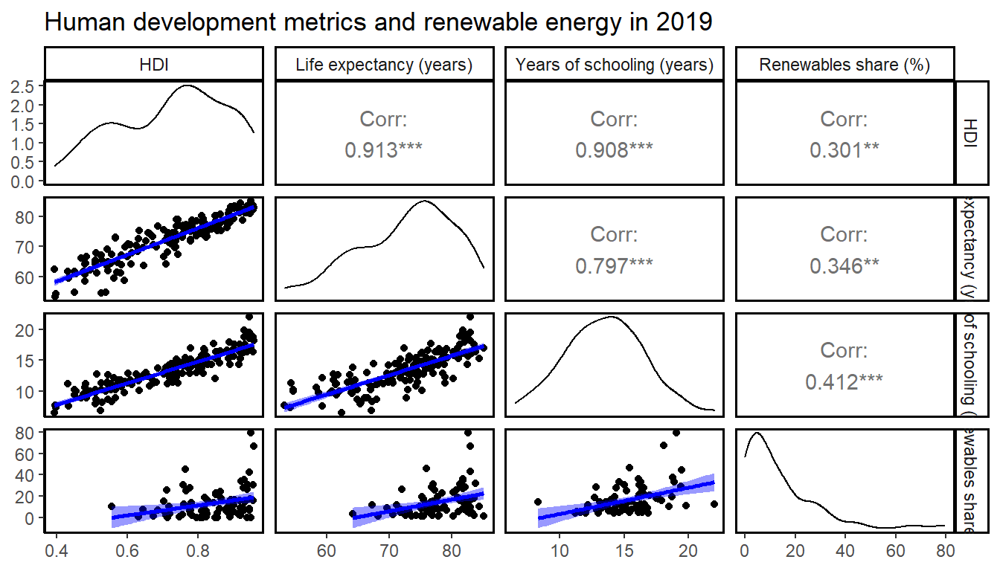
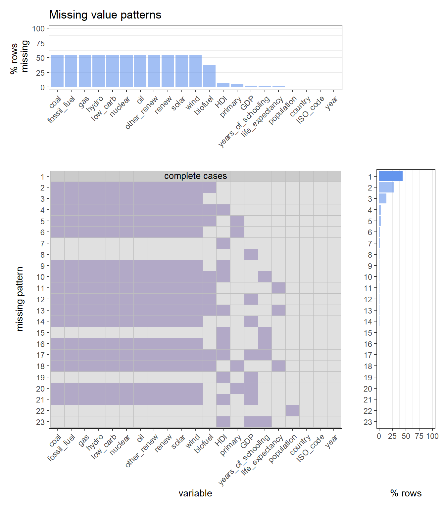
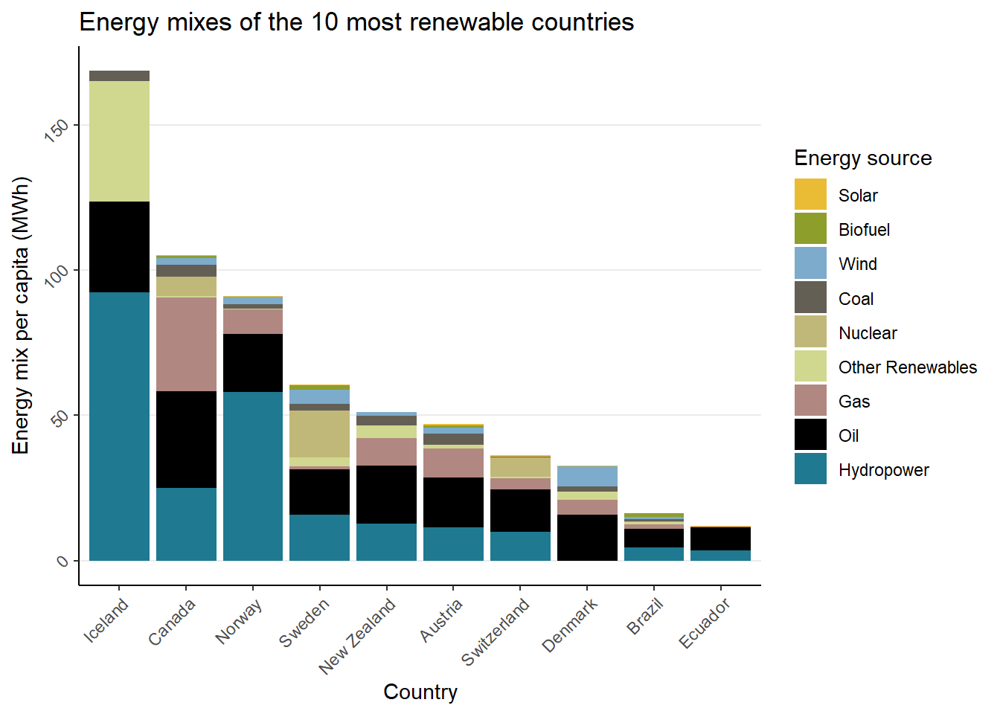

Chapter 4 Missing values
4.1 Load Data
4.2 Identify missing data
In identifying the missing data, we follow a top-down approach. From analysing the whole dataset, we drill for column and row-wise observations.
First, we calculate the share of all missing data to the overall dataset to get a sense of the magnitude.
## 68% of cell values is missingWith such a high value, we know that we will need to reduce our analysis to some subset of rows and/or columns to make many meaningful analyses.
Second, we calculate the missing data on a column basis to get a first sense for which columns will have more or less interpretability.
## perc_na
## biofuel_cons_change_pct 97.0
## carbon_intensity_elec 96.6
## solar_cons_change_pct 92.4
## nuclear_cons_change_pct 91.3
## wind_cons_change_pct 91.1
## other_renewables_cons_change_pct 86.7
## hydro_cons_change_pct 79.0
## gas_cons_change_pct 78.8
## coal_cons_change_pct 78.4
## low_carbon_cons_change_pct 78.0
## renewables_cons_change_pct 78.0
## biofuel_elec_per_capita 76.0
## biofuel_share_elec 75.9
## coal_cons_change_twh 75.9
## fossil_cons_change_pct 75.9
## fossil_cons_change_twh 75.9
## gas_cons_change_twh 75.9
## hydro_cons_change_twh 75.9
## low_carbon_cons_change_twh 75.9
## nuclear_cons_change_twh 75.9
## oil_cons_change_pct 75.9
## oil_cons_change_twh 75.9
## other_renewables_cons_change_twh 75.9
## renewables_cons_change_twh 75.9
## solar_cons_change_twh 75.9
## wind_cons_change_twh 75.9
## biofuel_electricity 75.6
## other_renewable_exc_biofuel_electricity 75.6
## biofuel_share_energy 75.4
## coal_share_energy 75.4
## coal_cons_per_capita 75.4
## fossil_share_energy 75.4
## fossil_fuel_consumption 75.4
## fossil_energy_per_capita 75.4
## gas_share_energy 75.4
## gas_energy_per_capita 75.4
## hydro_share_energy 75.4
## hydro_consumption 75.4
## hydro_energy_per_capita 75.4
## low_carbon_share_energy 75.4
## low_carbon_consumption 75.4
## low_carbon_energy_per_capita 75.4
## nuclear_share_energy 75.4
## nuclear_consumption 75.4
## nuclear_energy_per_capita 75.4
## oil_share_energy 75.4
## oil_energy_per_capita 75.4
## other_renewables_share_energy 75.4
## other_renewable_consumption 75.4
## other_renewables_energy_per_capita 75.4
## renewables_share_energy 75.4
## renewables_consumption 75.4
## renewables_energy_per_capita 75.4
## solar_share_energy 75.4
## solar_consumption 75.4
## solar_energy_per_capita 75.4
## wind_share_energy 75.4
## wind_consumption 75.4
## wind_energy_per_capita 75.4
## coal_elec_per_capita 72.7
## fossil_cons_per_capita 72.7
## gas_elec_per_capita 72.7
## oil_elec_per_capita 72.7
## gas_prod_change_pct 72.1
## coal_share_elec 71.0
## fossil_share_elec 71.0
## gas_share_elec 71.0
## oil_share_elec 71.0
## coal_electricity 70.7
## fossil_electricity 70.7
## gas_electricity 70.7
## oil_electricity 70.7
## coal_consumption 70.3
## gas_consumption 70.3
## oil_consumption 70.3
## hydro_elec_per_capita 68.5
## low_carbon_elec_per_capita 68.5
## nuclear_elec_per_capita 68.5
## other_renewables_elec_per_capita 68.5
## per_capita_electricity 68.5
## renewables_elec_per_capita 68.5
## solar_elec_per_capita 68.5
## wind_elec_per_capita 68.5
## biofuel_cons_change_twh 68.4
## biofuel_consumption 67.7
## biofuel_cons_per_capita 67.7
## low_carbon_share_elec 65.3
## other_renewables_share_elec 65.3
## renewables_share_elec 65.3
## other_renewable_electricity 65.1
## renewables_electricity 65.1
## hydro_share_elec 65.1
## low_carbon_electricity 65.1
## nuclear_share_elec 65.1
## solar_share_elec 65.1
## wind_share_elec 65.1
## electricity_generation 64.9
## hydro_electricity 64.9
## nuclear_electricity 64.9
## solar_electricity 64.9
## wind_electricity 64.9
## oil_prod_change_pct 62.6
## energy_per_gdp 60.4
## gas_prod_per_capita 57.9
## coal_prod_change_pct 57.3
## gas_prod_change_twh 54.7
## oil_prod_per_capita 54.5
## gas_production 53.7
## oil_prod_change_twh 50.9
## oil_production 50.0
## energy_per_capita 48.2
## coal_prod_per_capita 44.6
## energy_cons_change_pct 43.5
## energy_cons_change_twh 43.3
## primary_energy_consumption 41.9
## coal_prod_change_twh 40.4
## gdp 40.0
## coal_production 39.0
## population 10.1
## iso_code 0.0
## country 0.0
## year 0.0We see that a lot of data (70-90%) for percentage-wise consumption change of specific energy sources is missing. At the other end of the spectrum, we see that more data is available for less specific variables like “primary energy consumption” or “energy per capita”.
Third, we want to summarise the variables where less than 30% of data is available.
## Variables with over 70% of missing data:## [1] "biofuel_cons_change_pct"
## [2] "carbon_intensity_elec"
## [3] "solar_cons_change_pct"
## [4] "nuclear_cons_change_pct"
## [5] "wind_cons_change_pct"
## [6] "other_renewables_cons_change_pct"
## [7] "hydro_cons_change_pct"
## [8] "gas_cons_change_pct"
## [9] "coal_cons_change_pct"
## [10] "low_carbon_cons_change_pct"
## [11] "renewables_cons_change_pct"
## [12] "biofuel_elec_per_capita"
## [13] "biofuel_share_elec"
## [14] "coal_cons_change_twh"
## [15] "fossil_cons_change_pct"
## [16] "fossil_cons_change_twh"
## [17] "gas_cons_change_twh"
## [18] "hydro_cons_change_twh"
## [19] "low_carbon_cons_change_twh"
## [20] "nuclear_cons_change_twh"
## [21] "oil_cons_change_pct"
## [22] "oil_cons_change_twh"
## [23] "other_renewables_cons_change_twh"
## [24] "renewables_cons_change_twh"
## [25] "solar_cons_change_twh"
## [26] "wind_cons_change_twh"
## [27] "biofuel_electricity"
## [28] "other_renewable_exc_biofuel_electricity"
## [29] "biofuel_share_energy"
## [30] "coal_share_energy"
## [31] "coal_cons_per_capita"
## [32] "fossil_share_energy"
## [33] "fossil_fuel_consumption"
## [34] "fossil_energy_per_capita"
## [35] "gas_share_energy"
## [36] "gas_energy_per_capita"
## [37] "hydro_share_energy"
## [38] "hydro_consumption"
## [39] "hydro_energy_per_capita"
## [40] "low_carbon_share_energy"
## [41] "low_carbon_consumption"
## [42] "low_carbon_energy_per_capita"
## [43] "nuclear_share_energy"
## [44] "nuclear_consumption"
## [45] "nuclear_energy_per_capita"
## [46] "oil_share_energy"
## [47] "oil_energy_per_capita"
## [48] "other_renewables_share_energy"
## [49] "other_renewable_consumption"
## [50] "other_renewables_energy_per_capita"
## [51] "renewables_share_energy"
## [52] "renewables_consumption"
## [53] "renewables_energy_per_capita"
## [54] "solar_share_energy"
## [55] "solar_consumption"
## [56] "solar_energy_per_capita"
## [57] "wind_share_energy"
## [58] "wind_consumption"
## [59] "wind_energy_per_capita"
## [60] "coal_elec_per_capita"
## [61] "fossil_cons_per_capita"
## [62] "gas_elec_per_capita"
## [63] "oil_elec_per_capita"
## [64] "gas_prod_change_pct"
## [65] "coal_share_elec"
## [66] "fossil_share_elec"
## [67] "gas_share_elec"
## [68] "oil_share_elec"
## [69] "coal_electricity"
## [70] "fossil_electricity"
## [71] "gas_electricity"
## [72] "oil_electricity"
## [73] "coal_consumption"
## [74] "gas_consumption"
## [75] "oil_consumption"More than half the variables in the dataset have over 70% of empty cells. This could be detrimental if we did not know more about the dataset. However, the dataset contains energy data of
## 216countries (or similar entities) in the years
## 1900 to 2020Therefore, it is expected that a lot of data is missing for reasons like development status, begin of data entry, data destruction, non-existence of certain technologies and many more. Therefore, the time range and analyzed variables will be subset based on the further analysis.
4.3 Visualizations
In the following, visualizations of the missing data patterns by category, country, region, and year will be presented. Due to the size of the dataset, many visualizations are not readable for the whole dataset but were broken down into similar groups of variables. It is recommended to look at these visualizations in fullscreen.

Now we look at the missing data country-by-country as a time series  It can be seen that data availability generally increases over time. Furthermore, it can be seen that countries from Europe and, some from the Middle East, and North America have the strongest data availability. Nevertheless, a
We look at the same visualization on a more aggregated perspective, by region.  On a region-basis, we can see that Europe & central Asia, as well as North America have the least missing values. Sub-Saharan Africa on the other hand has the most missing values. For all regions, spikes in 1965 and 2000 can be seen. This will be needed to be analyzed further.

Visualized by year for all countries, it can now clearly be seen that major boosts in data availability occured around 1965 and 2000.